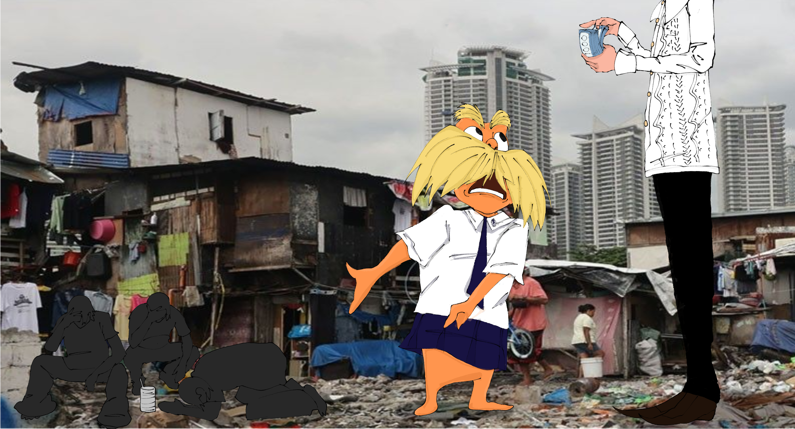

Float on Corruption
by J. Milo (2025) — Digital Artwork
Artwork exposing the irony of wealth and corruption in daily life.We can observe in the artwork the reality of how our taxes are really being used. Instead of using them to make the country better, they take the money and use it for their own benefit.

Rooted in Greed
by J. Milo (2025) — Digital Artwork
A cry for justice and awareness through powerful imagery. Illustrates the issue with the recent ongoing flood control projects. It symbolizes how our government leaders hide and use the allotted funds for government projects to gain power and flaunt their riches to the public.
×